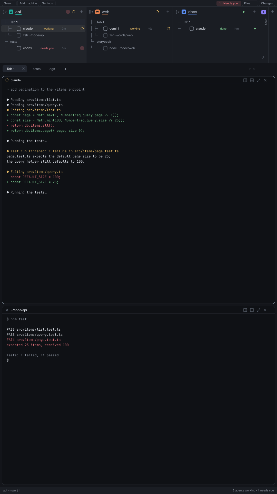

Portrait layout for Herdr
A Herdr layout for tall, vertical monitors. Your spaces sit side by side as columns in a strip at the top. Each column is a tree of tabs and panes with the state of every agent. The work area gets the rest of the screen, and a side panel brings Files and Changes when you want them.

What you get
- Two layoutsPortrait, with the strip on top, and portrait-bottom, with the strip between the work area and the status line. One key flips between them.
- Space treeOne column per space: its tabs, their panes, every agent with its state and how long it has been in it. Spaces fold into thin strips.
- Bar stripSearch, Add machine, Settings, a bell that says who needs you, and the Files, Changes and (optional) Vault buttons.
- Side panelFiles for the focused pane's folder with git marks; click a file to open it in the editor you pick (nvim or another terminal editor in a floating window, VS Code, Zed, Sublime Text or the default app); pictures and PDFs open in a viewer. Changes is Herdr's own.
Requirements
- The Herdr desktop app, 0.1.12 or newer. The layout was built and used on 0.1.12.
gitfor the change marks in Files (optional), an editor such asnvim(optional), Poppler for every page of a PDF (optional).- No network access, no account, no package to install. See Privacy for everything it runs and writes.
- macOS, Linux or Windows. What works where is on Platforms. It was developed and used on macOS only; Linux and Windows are described from reading the code and have not been run.
Install in one line
Tell the agent in your Herdr (or any coding agent that can read and write your Herdr home folder):
install https://github.com/miguelalexanderdiaz/herdr-portrait-layoutIt follows Herdr's own protocol for shared layouts: it tells you what the mods run, never overwrites, renames on a clash, asks before changing your keys.json, checks each mod, then switches the layout. By hand, step by step, is on Install.
Where next
- Usage: every part of the screen and what clicking it does.
- Configuration: theme, sizes, keys, the Vault panel, renaming.
- How it works: the layout tree, the mods, shared state, what is original and what is cloned.
- Troubleshooting and For agents.